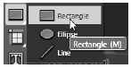
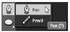
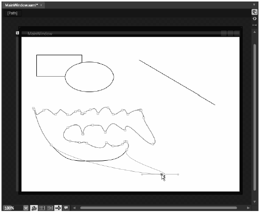
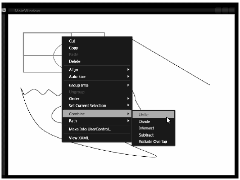
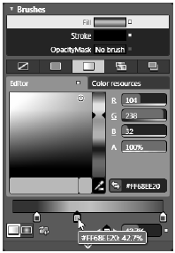
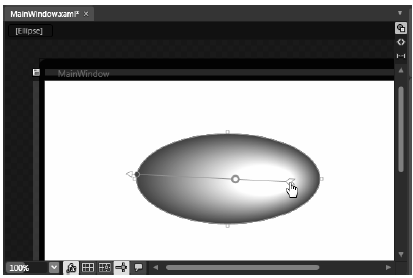
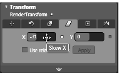

Although Visual Studio 2010 does give you a few IDE tools that let you work with shapes, Expression Blend provides many more features, including a graphical transformation editor. If you’d like to try things out first hand, launch Expression Blend and create a new WPF application. (We are not going to do much beyond trying out a few features of the IDE, so you can name this project whatever you wish.)
Look at your tool palette and you’ll see an area that lets you select an Ellipse, Rectangle, or Line (recall, you click-and-hold on buttons that have a small triangle on the lower-right to pop-up any available choices; see Figure 29-12).
Figure 29-12 Rendering basic shapes with Blend
Go ahead and draw a few overlapping shapes—you’ll see why in just a moment. Now, locate the area of the Blend tool palette where you can select the Pen and Pencil tools, as shown in Figure 29-13.
Figure 29-13 Working with pens and pencils
The Pencil tool allows you to render completely free-form polygons, similar to a scribble program. The Pen tool is better suited for rendering swooping arcs or straight lines. To draw lines with the Pen, simply click at the desired starting point, then click at the desired ending point on the designer. Be aware that both of these tools will generate a Path definition, with the Data property set using the path mini language mentioned earlier.
Play around with these tools and render some new graphics on the designer. Note that if you perform a Direct Select on any Path (such as the Path created by the Pencil tool) you can tweak the overall connecting segments, as seen in Figure 29-14.
Figure 29-14 Editing a Path
When you use the Ellipse, Rectangle, or Line tools, the XAML will indeed use the <Ellipse>, <Rectangle> and <Line> elements. For example:
<Rectangle Stroke="Black" StrokeThickness="1" HorizontalAlignment="Left" Margin="44,42,0,0" VerticalAlignment="Top" Width="137" Height="35"/>
If you right-click on one of these primitive types on your designer, you can select the Path-> Convert to Path menu option. When you select this operation, the original shape declaration is transformed into a Path containing a set of geometries, via the path mini language. Here is the previous <Rectangle> after conversion:
<Path Stretch="Fill" Stroke="Black" StrokeThickness="1" HorizontalAlignment="Left" Margin="44,42,0,0" VerticalAlignment="Top" Width="137" Height="35" Data="M0.5,0.5 L136.5,0.5 L136.5,34.5 L0.5,34.5 z"/>
While you might not need to convert a single shape into a Path containing geometries, it is common to combine multiple shapes into new paths.
Now try this. Select two or more shapes on the designer (via a mouse click-and-drag operation) and then right-click on the set of selected items. You’ll see that you have a number of options under the Combine menu that allow you to generate new Path objects based on a set of selections and a combine operation (Figure 29-15).
Figure 29-15 Combining Paths to generate new Paths
Essentially, the options under the Combine menu are basic Venn diagramming operations. Try a few and then view the generated XAML (and remember, just as in Visual Studio 2010, Ctrl + z will undo the previous operation!)
Like Visual Studio 2010, Blend supports a brush editor. When you select an item on the designer (such as one of your shapes), you can then go to the Brushes area of the Properties window. At the very top of the Brushes editor, you’ll find all properties on the selected object that can be assigned a Brush type. Below, you’ll find the same basic editing features you saw earlier in this chapter. Figure 29-16 shows one possible brush configuration.
Figure 29-16 The Blend brush editor
The only major difference between the Blend and Visual Studio 2010 brush editors is that with Blend you can remove a gradient stop by clicking on the offending thumb marker and dragging it off the gradient slider (literally anywhere off the gradient slider will do; right-clicking won’t work!).
Another nice feature of the Blend brush editor is that when you have selected an item that makes use of a gradient brush, you can press the G key on your keyboard or click the Gradient Tool icon on the tool palette to change the origin of the gradient (Figure 29-17).
Figure 29-17 Changing the origin of a gradient
Finally, Blend also supports an integrated transformation editor. First, select a shape on your designer (of course, the transformation editor works for any item selected in the Objects and Timeline window). Now, on your Properties window, locate the Transform pane (Figure 29-18).
Figure 29-18 The Blend transformation editor
As you experiment with the transformation editor, be sure to take some time to examine the resulting XAML. Also note that many transformations can be applied directly on the designer, by hovering the mouse over a resizing node of the selected object. For example, if you place the mouse next to a node on the side of a selected item, you can apply a skew. (Personally speaking, however, I tend to use the transformation editor, rather than trying to get the mouse positioned just so.)
Note Recall that members of the System.Windows.Shapes namespace are UIElements and have numerous events you can respond to. Given this, you can handle events on your drawings using Blend, just as you would when handling an event for a typical control (see Chapter 29).
That wraps up our first look at the graphical rendering services of WPF and our whirlwind tour of using Blend to generate simple graphical data. While you could use this information to build a number of graphical applications, our next step is to examine the second way to render out graphical data, using drawings and geometries.